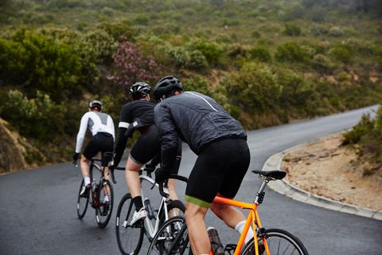

Cómo alimentarnos según nuestra edad
Adolescencia: 14 a 20 años
Las necesidades nutritivas en la adolescencia vienen marcadas
por los procesos de maduración sexual, aumento de talla y aumento de peso.
Estos procesos requieren una cantidad elevada de energía y de ciertos nutrientes;
hay que tener en cuenta que el adolescente gana aproximadamente
el 20% de la talla y el 50% del peso que va a tener como adulto.
Estos incrementos se corresponden principalmente con el aumento de masa muscular y de masa ósea.
Toda esta situación se ve directamente afectada por la alimentación que debe estar dirigida y
diseñada para cubrir el gasto que se origina.

Se deben mantener las recomendaciones de una dieta sana y equilibrada.
Con respecto a los hidratos de carbono y proteínas, las recomendaciones en cantidad y
calidad son las mismas que para un adulto sano, sin olvidar que el aporte correcto de
grasas supone cubrir adecuadamente las necesidades de ácidos grasos esenciales
(que el organismo no puede producir por sí sólo) y de vitaminas liposolubles (A, D y E)
Características generales de la dieta
• Variar al máximo la alimentación,
incluso dentro de cada grupo de alimentos
(distintos tipos de verduras, frutas, legumbres, carnes, pescados, etc.)
• Mantener los horarios de comidas de un día para otro y no saltarse ninguna.
• Comer despacio, masticando bien, en ambiente relajado, tranquilo, evitando distracciones (TV, radio, etc.)
•Comer ordenadamente; comenzar por el primer plato, después el segundo y por último el postre.
• Alimentos dulces, chocolates, refrescos, snacks
(patatas, ganchitos…), repostería, pizzas, hamburguesas, etc.
No hay porque omitir estos alimentos,
pero sí que es recomendable tomarlos en pequeñas cantidades y que
su consumo sea ocasional sin dejar que se convierta en un hábito.
• Se ha de tener en cuenta que dentro de grupo de alimentos,
las calorías varía en función de la cantidad de grasa o de azúcares añadidos
(leche entera o desnatada, carne magra o grasa, yogures azucarados o no...) y de la forma de cocinado
(frito, plancha, horno, etc.)

Alimentos Saludables
• 1. Tomate.
• 2. Pimentón .
•3. Garbanzo.
• 4. Pavo.
• 5. Sardinas.
•6. Arándanos.
• 7. Mango.
• 8. Uvas.
•9. Miel.
• 10. Aceite de Oliva.
• 11. Kiwi.
•12. Nuez.
• 13.Canela.
• 14. Pasta.
•15. Manzana.
Alimentos que aumentan tu masa muscular
• 1. Huevo
• 2. Aguacate.
•3. Atun.
• 4. Mani.
• 5. Pollo.
•6. Espinaca.
• 7. Banano.
• 8. Manzana Verde.
•9. Lenteja.
• 10. Arroz.

Alimentos que debes evitar para bajar de peso
• 1. Bolleria industrial
• 2. Alimentos muy procesados.
•3. Embutidos Demasiado Grasos.
• 4. Alimentos basados en harinas refinadas.r>
• 5. alcohol.
Alimentos recomendados
• 1. Frutas y verduras
• 2. legumbres.
•3. Frutos secos en una cantidad moderada.
• 4.Cortes magros de carne de animales.
• 5. pescado.
Alimentos que definitivamente debes eliminar
• 1. Donas
• 2. Gaseosas.
•3. Pan blanco.
• 4. Papas de paquete.
• 5. Azucar.
6. Barras de cereal.
• 7. Jamones.
• 8. Jugos naturales.
•9. Tocino.
• 10. Comida Chatarra.
• 11. Pasteleria
• 12. Chocolate.
•13. Golosinas.
• 14. Mermelada.
• 15. Maiz Pira
•16. Papas.
• 17. Cereales dulces.
• 18. Refrescos.
•19. Leche.
• 20. Bebidas energizantes.
• 21. Miel
• 22. Aceite.
•23. alcohol.
• 24. Carne Roja.>
• 25. Salsas.
•26. Harina.
• 27. Pasta.
• 28. Galletas.
•29. Helado.
• 30.Canes Embutidas.
